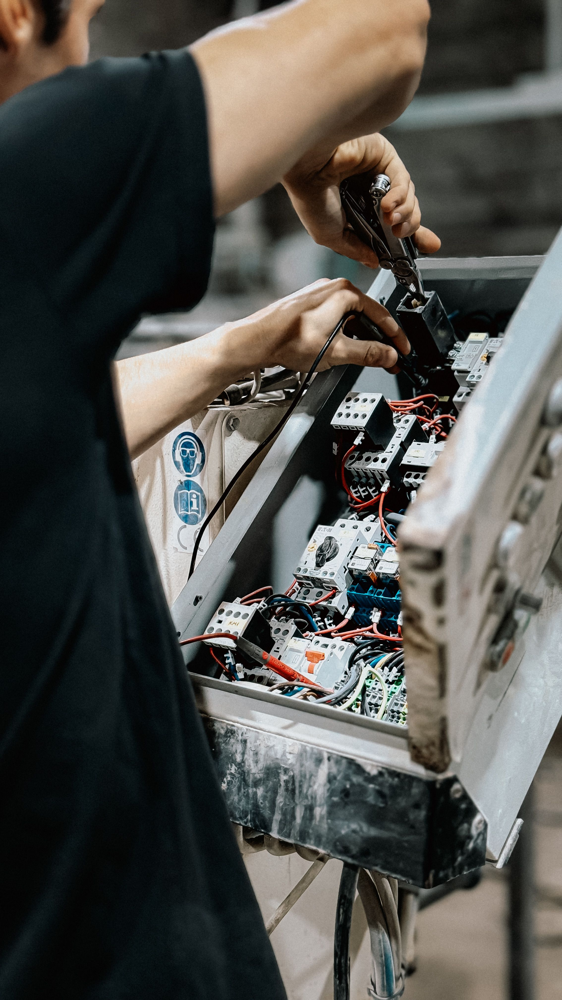
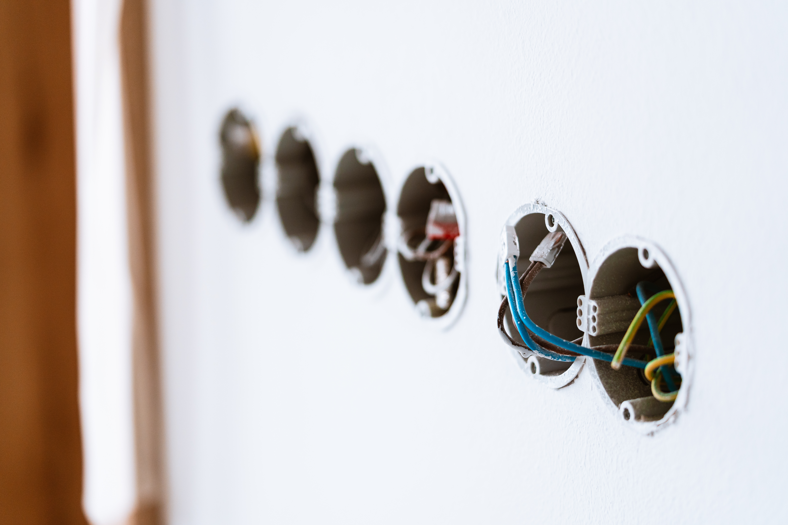

Výpadok elektriny v byte či dome
Preveríme rozvádzač, ističe, chrániče aj prívod a zistíme, kde je skrat alebo prerušenie.

K dispozícii
Do hodiny sme u vás. Riešime poruchy elektriny v domácnostiach, malých aj väčších firmách — výpadok prúdu, vyhodené ističe, porucha zásuvky či celého rozvádzača. Náš tím skúsených technikov je pripravený pomôcť 24/7, aj cez víkendy a sviatky.
Cena havarijného výjazdu
Na Slovensku je — platí sadzba
Pondelok – piatok, 8:00 – 16:30
75 €základný výjazd
Večer, v noci, cez víkendy a sviatky
100 €základný výjazd
Doprava je v cene v rámci Košického a Prešovského kraja. Ak cesta k vám trvá viac ako hodinu, čas navyše účtujeme hodinovou sadzbou technika. Materiál sa platí osobitne podľa skutočnej spotreby.
Takto vyzerajú zásahy, ktoré riešime. Ak je vaša situácia iná, zavolajte tiež — po telefóne zvyčajne vieme povedať, či to počká do rána. Kliknutím fotku zväčšíte.
Preveríme rozvádzač, ističe, chrániče aj prívod a zistíme, kde je skrat alebo prerušenie.

Istič, ktorý sa nedá nahodiť alebo hneď vypadne, znamená skrat či preťaženie. Nájdeme okruh s poruchou a opravíme ju.

Nájdeme príčinu, opravíme spoj alebo vymeníme poškodený prvok a odskúšame okruh.

Vyhľadáme miesto poruchy, kábel opravíme alebo nahradíme a obnovíme dodávku.

Príčinou býva zatečená vonkajšia zásuvka, svietidlo alebo krabica. Nájdeme miesto úniku a opravíme ho.

Vymeníme poškodené ističe a chrániče a doplníme prepäťovú ochranu.
Opíšete, čo sa deje. Poradíme, čo vypnúť, aby ste sa medzitým nevystavili riziku.
Poviete adresu, my povieme, kedy sme u vás. Termín platí.
Zmeriame okruhy a odhalíme skutočný zdroj poruchy, nie len jej prejav.
Poruchu odstránime, obnovíme dodávku a vysvetlíme, čo sa stalo a ako tomu predísť.
Najprv skontrolujte ističe v rozvádzači a či majú elektrinu aj susedia. Ak ide o výpadok len u vás a ističe sa nedajú nahodiť alebo hneď vypadnú, zavolajte na +421 915 932 304. Poradíme po telefóne, čo vypnúť, a dohodneme príchod.
Ak istič po nahodení znovu vypadne, v okruhu je skrat alebo preťaženie. Odpojte spotrebiče na tom okruhu a skúste ešte raz. Ak vypadne aj bez spotrebičov, ide o poruchu elektroinštalácie — nájdeme ju meraním na mieste.
Havarijnú službu elektro poskytujeme pre Košice a okolie nonstop, 24 hodín denne vrátane víkendov a sviatkov. Po telefonáte dohodneme presný čas príchodu a termín platí.
Pozrite sa, či svietia susedia alebo verejné osvetlenie. Ak nie, ide o výpadok distribučnej siete a treba volať distribútora. Ak elektrina nejde len vám, porucha je vo vašom byte alebo dome — s tou vám pomôžeme my.

Oprava môže byť len dočasné riešenie. Pri starších rozvodoch býva problém často inde. Staré hliníkové rozvody, poddimenzované ističe alebo chýbajúce chrániče sa jednotlivými zásahmi nevyriešia. Ak máte záujem, radi vám urobíme kompletnú prerábku elektroinštalácie — od návrhu a dodania materiálu po montáž a revíznu správu. Povedzte nám o tom pri zásahu alebo zavolajte kedykoľvek neskôr; prídeme na nezáväznú obhliadku a povieme rozsah aj cenu.